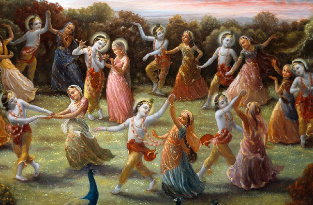
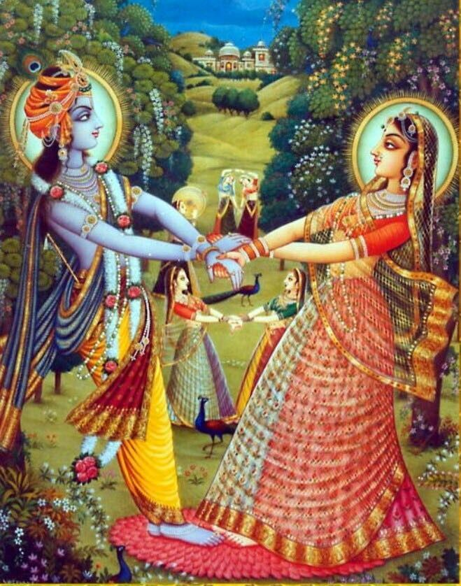

Radha Krishna Raslila is one of the most enchanting and divine narratives in the Hindu tradition, depicting the love and devotion between Lord Krishna and Radha. Raslila, a traditional Indian dance-drama, is considered a divine expression of the deep spiritual and emotional bond between Radha and Krishna. The term "Raslila" is derived from two words: "Rasa," which means emotion or dance, and "Lila," meaning play or pastime. Together, Raslila symbolizes the 'dance of divine love'.
Raslila is not just a dance; it is a form of worship, a divine play that transcends the boundaries of human understanding. It captures the essence of bhakti (devotion) and transports the participants and audience to a realm where the love between the divine couple is celebrated with reverence and joy. This timeless tradition has been passed down through generations and continues to be an integral part of Indian culture and spirituality.
The origins of Raslila can be traced back to the ancient texts and scriptures of Hinduism. It is believed to have originated in the region of Braj, where Lord Krishna spent his childhood. The Bhagavata Purana, one of the most revered Hindu scriptures, narrates the story of Krishna's Raslila with the Gopis (milkmaids) of Vrindavan. According to the text, Krishna performed the Raslila on a full moon night in the forests of Vrindavan, captivating the Gopis with his divine flute and enchanting presence.
The significance of Raslila lies in its portrayal of the pure, selfless love between Radha and Krishna. It symbolizes the union of the individual soul (Jivatma) with the universal soul (Paramatma). The Raslila is often interpreted as an allegory of the soul's journey towards divine love and spiritual enlightenment. It represents the eternal dance of the universe, where the soul yearns to merge with the divine.
In the context of Bhakti Yoga, Raslila holds a special place as it exemplifies the path of devotion. Devotees see themselves as the Gopis, longing for the divine presence of Krishna. The dance becomes a medium through which they express their love, devotion, and surrender to the divine. The Raslila is not just a physical dance but a spiritual experience that brings the devotee closer to God.
Raslila has had a profound impact on Indian culture, influencing various forms of art, music, and literature. The themes of Raslila have been depicted in countless paintings, sculptures, and folk songs, capturing the essence of divine love. In classical Indian dance forms like Kathak and Bharatanatyam, Raslila has inspired many compositions, where dancers narrate the story of Radha and Krishna through their graceful movements and expressions.
The cultural significance of Raslila extends beyond the borders of India. It is celebrated in various forms across the world, particularly in regions with a strong Hindu influence. In places like Bali, Indonesia, and Nepal, the story of Radha and Krishna is celebrated with great fervor, showcasing the universality of the theme of divine love. The Raslila has also been adapted into various regional dance forms, each adding its unique flavor while preserving the core essence of the narrative.
In modern times, Raslila has found a place in popular culture as well. The story of Radha and Krishna has been depicted in numerous films, television shows, and stage performances, reaching a wider audience. Despite the changes in medium and presentation, the timeless message of love, devotion, and spiritual longing continues to resonate with people of all ages and backgrounds.
The performance of Raslila is a highly revered tradition, particularly in the Braj region, where it is performed with great devotion and attention to detail. The performers, often young boys, are trained from a young age in the art of Raslila, learning the intricate dance movements, expressions, and songs that are integral to the performance. The role of Krishna is usually played by a young boy, symbolizing the purity and innocence of the divine play.
Raslila performances typically take place during festivals like Janmashtami (Krishna's birthday) and Holi (the festival of colors). The performances are often held in temple courtyards or open spaces, where the audience can witness the divine dance under the open sky. The performance begins with the invocation of Lord Krishna, followed by the depiction of various episodes from his life, culminating in the Raslila. The dance is accompanied by live music, with traditional instruments like the flute, mridangam, and harmonium adding to the divine atmosphere.
One of the unique aspects of Raslila is its interactive nature. The audience is not just a passive spectator but is actively involved in the performance. The devotees often sing along with the performers, clap their hands, and even join in the dance, creating a communal experience of devotion and joy. The boundary between the performer and the audience blurs, and together, they recreate the divine moments of the Raslila.
Over the years, Raslila has also been adapted for the stage, with professional dance troupes performing it in theaters and cultural festivals across the world. These performances often feature elaborate costumes, sets, and lighting, adding a dramatic element to the traditional dance. Despite these modern adaptations, the spiritual essence of Raslila remains intact, continuing to inspire and uplift the hearts of those who witness it.

Radha Krishna Raslila is a celebration of divine love, a timeless tradition that transcends the boundaries of culture, religion, and time. It is a dance of devotion, a spiritual journey that takes the devotee closer to the divine. Through the enchanting dance of Raslila, the love between Radha and Krishna is immortalized, reminding us of the eternal bond between the soul and the divine.
In today's world, where material pursuits often overshadow spiritual aspirations, Raslila serves as a reminder of the importance of love, devotion, and the pursuit of spiritual enlightenment. It is a tradition that continues to thrive, inspiring generations of devotees and artists to explore the depths of divine love. As we witness or participate in Raslila, we are reminded of the simple yet profound truth that love is the essence of life, and in love, we find our true connection with the divine.